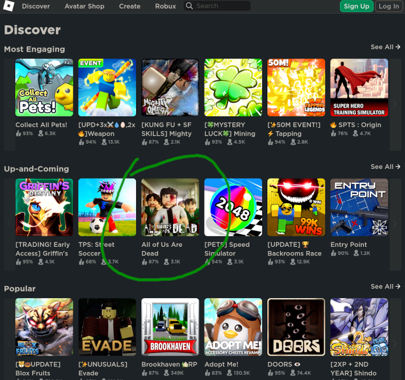
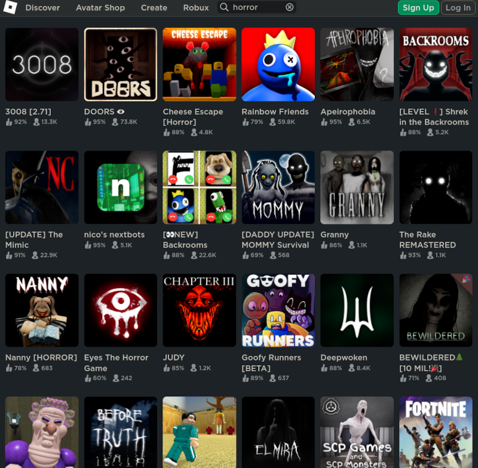
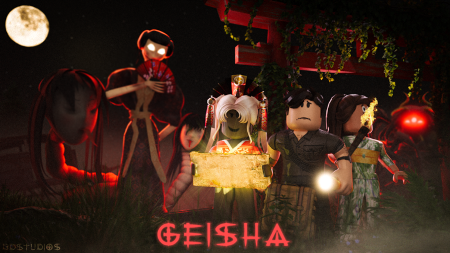
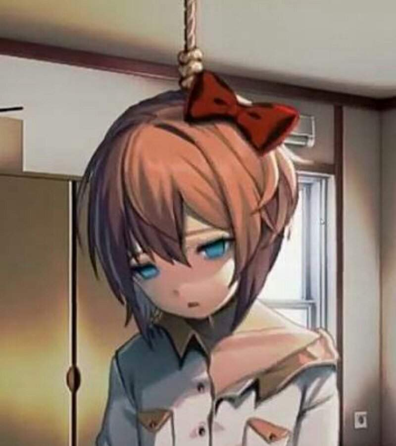
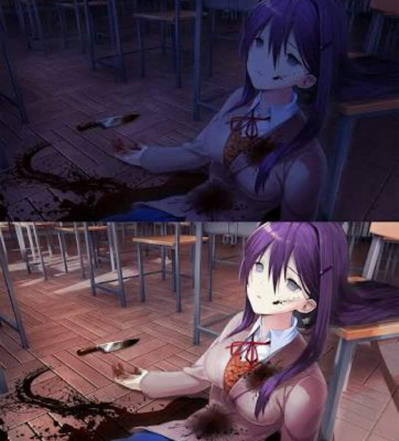

Roblox
Kolejna popularna wśród dzieci wieloosobowa gra internetowa/platforma do tworzenia gier to Roblox. Można tu znaleźć bardzo wiele gier-horrorów, nieoznaczonych jako gry dla dorosłych. Z początku niektóre z nich wydają się nawet nieszkodliwe. Dopiero w miarę rozwoju akcji ich nastrój i przekaz staje się coraz bardziej mroczny.
Kilka przykładów:
Strona "Discover"
Zestaw gier proponowanych na tej stronie często się zmienia, ale zazwyczaj znajdzie się wśród nich przynajmniej jeden horror, jak widać na poniższym zrzucie ekranu (gra z zombi):
Wyniki wyszukiwania "horror"
Jeśli zamiast przeglądania całego katalogu (jak robią to dzieci) wpiszemy w polu wyszukiwania „horror”, naszym oczom ukaże się zestawienie ogromnej ilości gier opatrzonych naprawdę upiornymi grafikami.
Geisha
Gra zawiera przerażające sceny, a nawet „jump scares” (szokujące obrazy pojawiające się z zaskoczenia). Sam obrazek niezbyt wiernie oddaje rzeczywisty nastrój gry.
Znacznie lepiej widać to na trailerze...
Doki Doki Literature Club
Znany psychologiczny horror, który zaczyna się całkiem przyjemnie. Dopiero po kilku godzinach grania koleżanki głównego bohatera zaczynają na różne sposoby popełniać samobójstwo.
Oryginał Doki Doki znajduje się poza Roblox, natomiast sama platforma może pochwalić się kilkoma różnymi adaptacjami tej gry (na przykład taką). Zaprezentowane zdjęcia pochodzą z oryginału:


Rating innych darmowych strasznych gier
Oto kilka innych strasznych gier, w które każdy może zagrać za darmo. Niektóre z nich niekoniecznie wyglądają niepokojąco na liście gier. Efekt zaskoczenia tylko potęguje odczucie lęku w trakcie gry.
Uwodzenie dzieci
- Platforma gamingowa Roblox stała się narzędziem internetowych pedofilów
-
Reportaż w języku angielskim o niebezpieczeństwie Roblox dla dzieci (zapasowe źródło)
Tutaj przede wszystkim warto zwrócić uwagę na fragment dotyczący wirtualnego molestowania seksualnego 12-letniej dziewczynki i 11-letniego chłopca (udającego dziewczynkę):